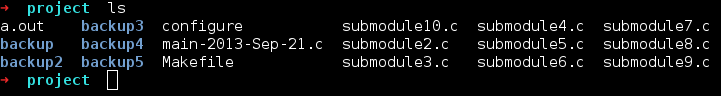

git(hub/foss-np/${projects})?
Kick Start !!!
Debian Based Linux
$ sudo apt-get install git
extra: git-cola, git-sh
Win
http://www.git-scm.com/download/win (exe)
Goodies (*bash)
$ git clone http://github.com/rhoit/my-config
$ cd my-config/shell/
$ ./configure
$ make
$ sudo make install
Can't find, What you are looking for?
Existing Implimentation sucks?
Do u Code? write programs?
y u no use SCM


GIT Stupid Content Tracker
GIT Stupid Content Tracker
Distributed Version Control
GIT Stupid Content Tracker
Distrubuted Version Control
made 4 kernel-dev
GIT Stupid Content Tracker
Distrubuted Version Control, made 4 kernel-dev
Simple & Fast
Demo
http://pcottle.github.io/learnGitBranching/
Resources
http://git-scm.com/ - Official git website
http://learn.github.com/
many many more...
After all GIT is just a tool!
Fool with the tool is still a Fool!
-- i forgot!
* original slide were made by hardfire
@rhoit / github
Thank You!
←
→
/
#
@rhoit / github
Thank You!